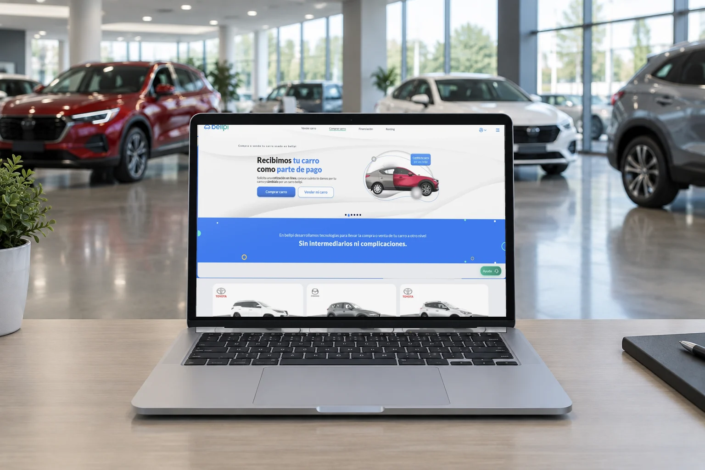
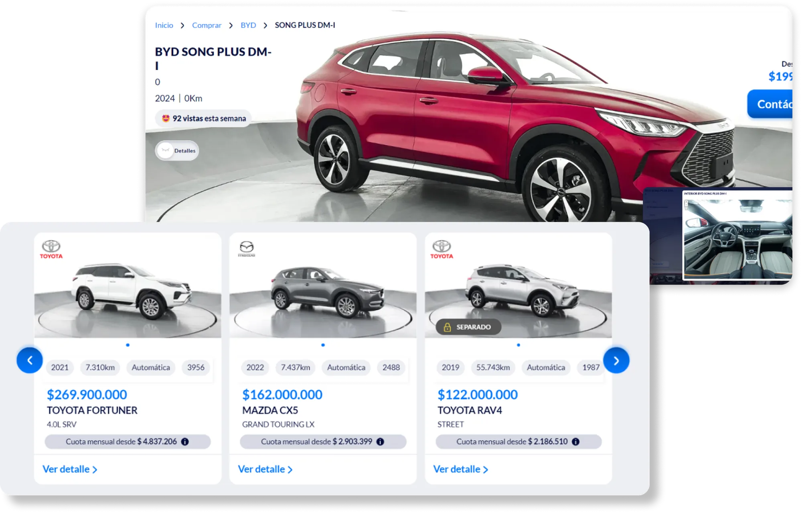
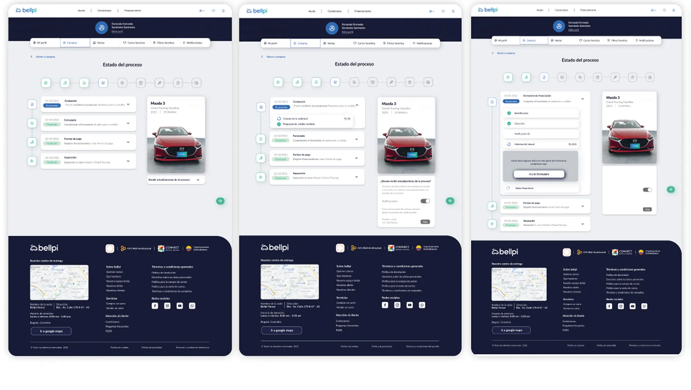
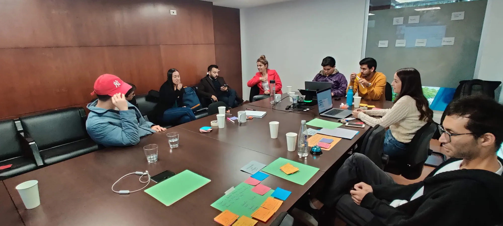
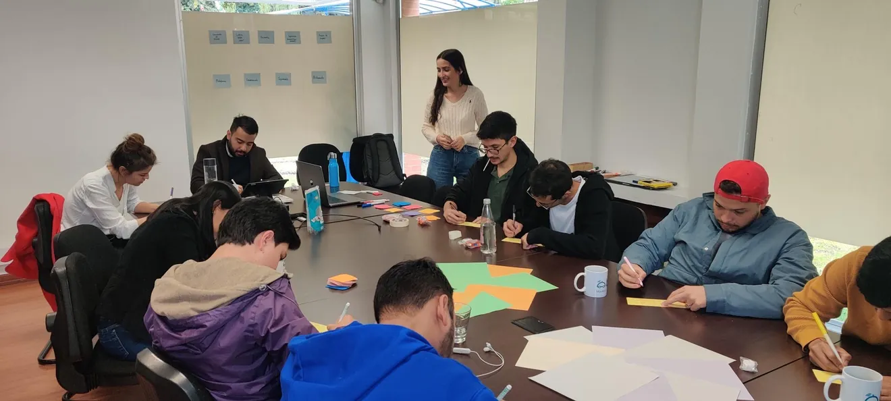
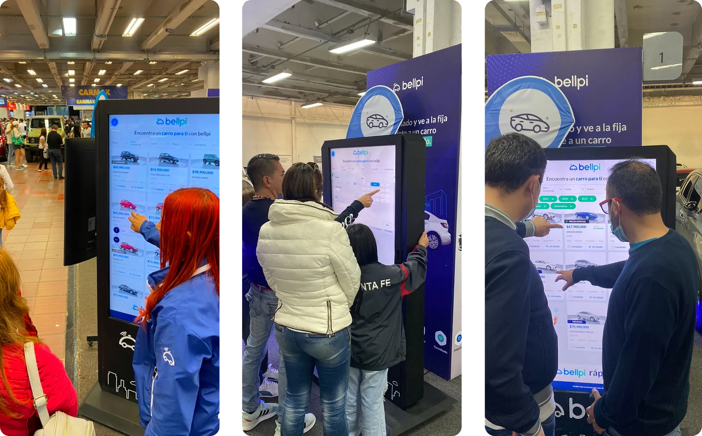
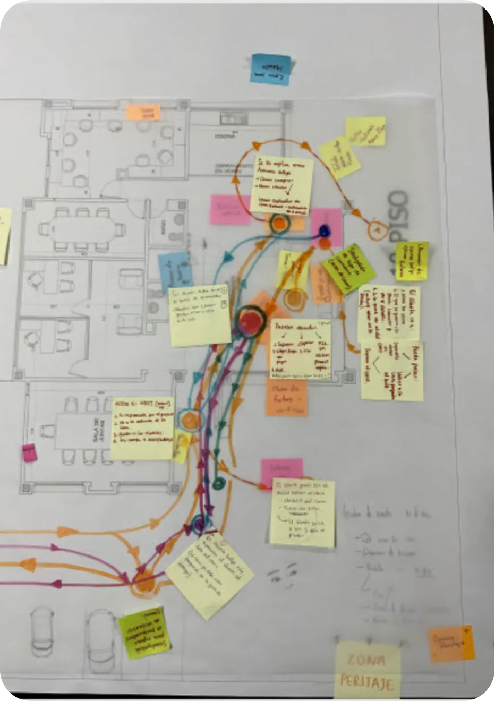
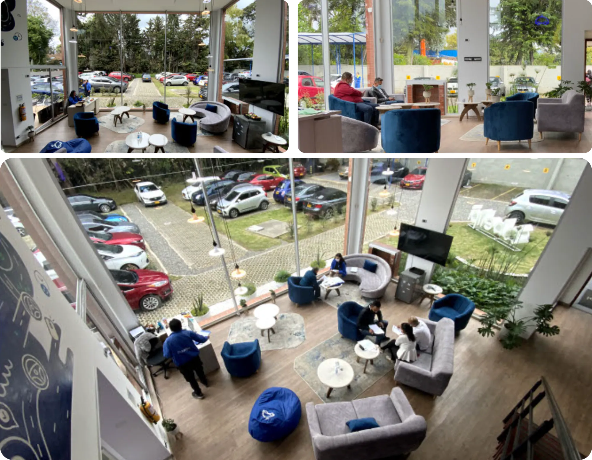

Bellpi
Plateforme e-commerce · Véhicules d'occasion · Colombie
UX & Service Designer · 2024
Acheter une voiture d'occasion sans intermédiaire
- Lancement de la version 1 de la plateforme
- Parcours d'achat, de vente et de reprise
- Bornes interactives en point de vente

Contexte
Bellpi est une plateforme e-commerce pour acheter et vendre des voitures d'occasion en Colombie. L'idée : transformer une démarche souvent compliquée en une expérience numérique pensée vraiment pour l'utilisateur.
Comme UX & Service Designer, j'ai participé au lancement de la V1 de la plateforme et aux itérations qui ont suivi :
- Concevoir et améliorer les parcours de bout en bout, côté acheteurs et côté vendeurs.
- Mener la recherche utilisateur et en tirer des décisions concrètes.
- Travailler avec des équipes de plusieurs métiers pour aligner le design sur les objectifs business.
- Produire wireframes, prototypes et service blueprints pour montrer et valider les solutions.
Lancement de produit
J'ai travaillé dans une équipe pluridisciplinaire où, dès le premier lancement, nous avons posé des OKR et KPI clairs pour suivre le produit et guider chaque itération. Ça nous a menés à une deuxième phase centrée sur l'empathie avec les utilisateurs, où nous avons évalué les parcours des vendeurs et des acheteurs.
Méthodologies appliquées :
- Design Thinking
- Lean UX
- Scrum
J'ai aussi adapté la plateforme à plusieurs formats : bornes, tablettes, ordinateurs de bureau et écrans tactiles, sans perdre la cohérence de l'expérience.
Côté UX, j'ai participé à la création d'une expérience web responsive pensée pour le tactile, surtout pour les événements et salons. Le but : que chacun puisse naviguer, comprendre vite et interagir sans difficulté dans des lieux publics très fréquentés.


Itération continue
La recherche et l'analyse UX ont fait ressortir des enseignements clés qui ont guidé l'amélioration continue de la plateforme. Mon rôle : les transformer en solutions de design concrètes, en accordant les besoins des utilisateurs et les objectifs de l'entreprise.
En travaillant au plus près des devs et des parties prenantes, j'ai veillé à la cohérence entre les points de contact, avec l'accessibilité, l'architecture de l'information et l'utilisabilité en tête, dans un cadre agile.


Expérience sur site
En parallèle, j'ai aidé à évaluer et améliorer l'expérience physique : séances d'observation, analyse approfondie et modélisation de l'espace et des déplacements dans la première agence Bellpi.
- Zones d'attente
- Zone de points d'information
- Zones de rencontre avec les acheteurs
- Zones de snacks
- Écrans tactiles et ordinateurs pour les utilisateurs


